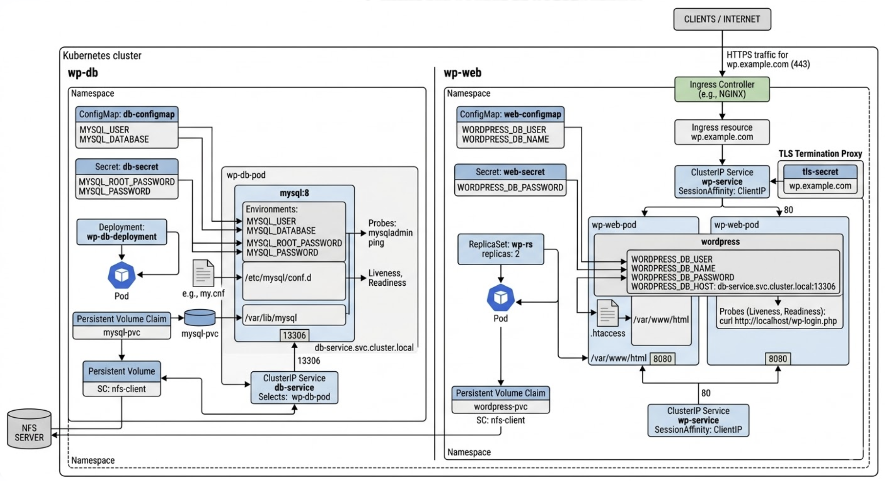

Kubernetes 기반 WordPress 인프라 구축
Kubernetes
MySQL
WordPress
NFS
Ingress
ConfigMap
Secret
Overview
기존 WAS 아키텍처를 Kubernetes 환경으로 확장하여, 컨테이너 기반으로 WordPress 서비스를 구성하고 설정, 스토리지, 네트워크를 Kubernetes 리소스로 분리하여 관리하는 프로젝트입니다.
Architecture
- DB: MySQL Pod + PVC + Secret + ConfigMap
- Web: WordPress ReplicaSet (2 replicas) + PVC (NFS)
- Storage: NFS 기반 PersistentVolume
- Service: ClusterIP 내부 통신
- Ingress: 도메인 기반 외부 접근 (TLS 적용)
Key Implementation
- ConfigMap과 Secret을 통한 환경 변수 분리 관리
- PVC를 활용한 데이터 영속성 확보
- ReplicaSet 기반 Web 서버 이중화
- SessionAffinity를 통한 사용자 세션 유지
- Ingress + TLS 설정으로 HTTPS 서비스 구성
Troubleshooting
- PVC 바인딩 실패 → StorageClass 및 NFS 설정 문제 해결
- Pod 재시작 문제 → liveness/readiness probe 튜닝
- Ingress 접근 실패 → DNS 및 TLS 설정 오류 수정
- DB 연결 문제 → Secret 및 환경 변수 설정 점검
Impact
전통적인 인프라 구조를 Kubernetes로 전환하며, 컨테이너 기반 서비스 운영과 선언적 인프라 관리 방식에 대한 이해도를 확보했습니다.